Iomega Bernoulli - первое устройство со сменными магнитными носителями большой емкости. Фирма Iomega первой наладила выпуск накопителей и картриджей этого типа, отличающихся исключительной прочностью и надежностью. Отличительной чертой диска Бернулли, в общем похожего на обычные дискеты формата 5,25”, является то, что он подобно дискетам 3,5” помещен в жесткий корпус. Сейчас выпускается несколько разновидностей таких картриджей емкостью 35, 65, 105 и 150 МБайт. Диски типа Бернулли считаются самыми прочными и надежными из всех сменных носителей.
Iomega Zip - появился на рынке в 1995 году. Модели ZIP выпускаются внутренние/внешние, IDE/SCSI/LPT, и к тому же с хорошим программным обеспечением. Пиковая скорость передачи данных у первых моделей достигала 1,4 Мб/с, а среднее время доступа - 29 мс. Новые модели (Zip Plus) сравнимы по скорости считывания данных с высокоскоростными приводами CD-ROM. Но Zip не совместим с FDD.
Iomega Jaz - появился на рынке сразу после Zip. Модели емкостью 1Гб имели производительность намного лучше, чем у Zip; заметно уступали моделям SyQuest Technology. В комплекте поставляется хорошее програмное обеспечение. Среди скоростных накопителей большого объема лидерство сохраняется за Jaz.
Super Disk LS-120- появился заметно позже чем Zip. К моменту своего появления он был дороже чем Zip. Но в конце концов совместимость с флоппи-дисководом и большая емкость стали давать результат. LaserServo - в вольном переводе можно назвать как флоппи-дисковод с лазерным приводом; он стал работать быстрее своего предшественника примерно в 5 раз. Слабое место - маленькая производительность.
UHC (Ultra High Capacity) это попытка совместить Zip и FDD. Устройство разработано Mitsumi Electronics и Swap Instruments на основе технологии Antek Peripherails. UHC - практически это тот же Zip с чуть-чуть увеличенным объемом.
HiFD (High Capacity Floppy Disk) разработан и продвигается на рынок Fuji (Fuji Photo Film) и Sony. Емкость его составляет 200 Мб и 500Мб. Совместим с FDD, т.е. за счет наличия обратной совместимости будут считываться стандартные 3,5" дискеты, причем именно для этого в устройстве присутствует два интерфейса.
В носителях Бернулли, которые производит фирма Iomega, применяются гибкие магнитные диски 3,5 и 5,25" объемом 150 Мбайт и более. Принцип, положенный в основу работы накопителей, базируется на открытии швейцарского математика Даниила Бернулли (1700 — 1782). Закон Бернулли гласит, что чем выше скорость потока жидкости или газа через произвольно выбранное сечение, тем меньше статическое давление, а при уменьшении скорости потока статическое давление возрастает. Кстати, этот закон объясняет наличие подъемной силы крыла как птицы, так и самолета. Строение крыла таково, что поток обтекает верхнюю часть крыла быстрее, чем нижнюю, а разность давлений образует подъемную силу.
Фирма Iomega применила этот же принцип при создании картриджа со сменным гибким диском и в знак уважения к швейцарскому математику назвала его именем Бернулли. Когда гибкий диск вращается внутри картриджа (конструкционные требования к картриджу высоки) с большой скоростью (3600 об/мин), он становится псевдожестким диском.
Диски типа Бернулли считаются самыми прочными и надежными из всех сменных носителей. Их, в отличие от других, можно смело пересылать по почте, хотя, по сути, они представляют собой гибкие диски, уложенные в футляр.
Диск в накопителе вращается, опираясь на воздушную подушку, причем зазор между ним и головками записи/чтения составляет доли миллиметра. Создаваемый вращающимся диском воздушный поток отклоняется определенным образом с помощью так называемой пластины Бернулли. Она неподвижна и располагается так, что диск подталкивается воздушным потоком вплотную к головке, но не касается ее. Прикосновение головки к поверхности диска могло бы привести к быстрому износу диска. Накопители Бернулли снабжены встроенными функциями случайного перемещения в то время, когда нет обращения к данным. Это препятствует чрезмерному износу дорожек.
Частота вращения диска составляет 3600 об/мин, что приблизительно соответствует частоте вращения жестких дисков с низким быстродействием. Среднее время доступа к данным составляет 18 мс. Когда скорость диска падает, он плавно отходит от магнитной головки, т, е. в принципе исключается возможность касания головкой поверхности диска в случае механического отказа или отключения электропитания. Помимо высокоточного исполнения всех узлов, накопитель Бернулли обладает высокой прочностью.
Накопители Бернулли выпускаются как во встраиваемом в системный блок варианте, так и для внешнего подключения. Модель MultiDisk-150, например, размещается в отсеке для пятидюймового дисковода и подключается к адаптеру IDE. Для портативного устройства требуется плата адаптера SCSI с внешним разъемом.
Согласно рекламным проспектам фирмы Iomega, среднее время безотказной работы накопителей Бернулли составляет не менее 75 000 ч. Кроме фирмы Iomega, устройства со смешанными гибкими магнитными носителями выпускаются всего несколькими компаниями, в том числе SyQuest.
На нашем рынке гибкие магнитные диски Бернулли встречаются крайне редко.
К малогабаритным устройствам резервного копирования относятся накопители Zip на сменных гибких магнитных дисках, разработанные фирмой Iomega. Картридж накопителя Zip содержит гибкие магнитные диски, обеспечивающие хранение данных объемом до 100 Мбайт. Причем сам накопитель, использующий такой картридж, может быть внешним или встраиваемым. В последнем случае он устанавливается в стандартный пятидюймовый отсек. Размеры портативного накопителя Zip невелики (375x137x180 мм), а вес его составляет 450 - 500г. Цена такого накопителя на отечественном рынке колеблется от 80 до 100 USD, а цена картриджа Zip – от 9 до 12 USD. Картридж Zip(рис. 1) имеет размеры 6x102x102 мм (соизмеримы с размерами трехдюймовой дискеты) и вес около 30г.
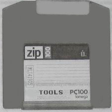
Рисунок 1. Внешний вид картриджа Zip
Эти устройства базируются на традиционной технологии магнитных носителей, но имеют более совершенную систему позиционирования головок записи/чтения и надежную механику привода.
Скорость вращения диска (3000 об/мин) соизмерима со скоростью вращения жесткого диска, среднее время доступа — 29 мс. Скорость передачи данных зависит от типа интерфейса: минимальная — при использовании стандартного принтерного порта (0,79 Мбайт/с) и максимальная — при использовании встроенного накопителя со SCSI-контроллером (1,4 Мбайт/с).
В ходе исследований по развитию технологии сменных носителей информации многие фирмы искали решение, которое отвечало бы всем требованиям пользователей как по производительности и объему накопителя, так и по его стоимости. В результате, основываясь на огромном опыте разработки мобильных дисковых накопителей, компания Iomega разработала приводы Zip (рис. 2).
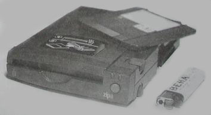
Рисунок 2. Внешний вид накопителя Zip
Появление этих устройств значительно изменило ситуацию на рынке накопителей со сменными дисками. Накопители Zip являлись одной из наиболее интересных новинок, появившихся на прилавках компьютерных магазинов в 1996-1998 годах. Чем же они прельщали пользователей? Во-первых, Zip-накопители позволяют переносить файлы данных объемом до 100 Мбайт с компьютера на компьютер и, во-вторых, обеспечивают резервное копирование информации с жестких дисков. Используя стандартные архиваторы, содержимое диска емкостью 1 Гбайт можно разместить на пяти Zip-дисках вместо трехсот стандартных дискет емкостью 1,44 Мбайт.
Привод Zip – это накопитель на гибких дисках эпохи мультимедиа. С привода Zip нельзя произвести загрузку компьютера, но его можно использовать для выполнения следующих операций:
Приводы Zip имеют хорошее соотношение цена/производительность и превосходят по своим характеристикам (табл. 1) все имеющиеся накопители со сменными носителями подобного типа.
Доступная цена приводов и Zip-дисков, их малые размеры говорят сами за себя. Особенно эффективным может быть использование Zip-накопителей в больших фирмах, школьных компьютерных классах, где один внешний накопитель может обслуживать несколько компьютеров. А для сервисного инженера или техника он просто незаменим: позволяет всегда иметь при себе весь немалый набор программного обеспечения.
В накопителях Zip предусмотрена функция введения пароля, что позволит хранить конфиденциальную информацию.
Рост объемов продаж данных устройств мог бы привести к тому, что они стали бы фактически стандартом накопителей со сменными дисками средней емкости. Некоторые известные фирмы, например Epson, начали лицензионное производство Zip-накопителей, а ряд производителей компьютеров принял решение устанавливать их в свою продукцию.
Таблица 1 – Характеристики накопителя Zip фирмы Iomega 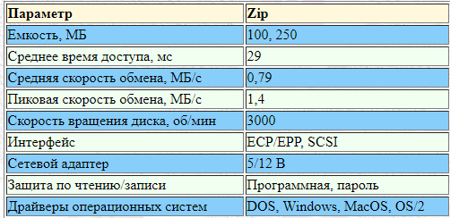
В устройствах с подвижной катушкой нет заранее зафиксированных положений. Вместо этого в них используется специальная система наведения (позиционирования), которая точно подводит головки к нужной дорожке.
Система точного наведения головок на дорожки называется сервоприводом, а для его работы требуется сигнал обратной связи, который несет информацию о реальном взаимном расположении дорожек и головок.
Колебания температур не сказываются на точности работы привода. При сжатии и расширении дисков (вращение, температура) все изменения их размеров отслеживаются сервоприводом и положения головок корректируются. Для поиска конкретной дорожки используется заранее записанная на диске вспомогательная информация (сервокод). Поскольку сервокод считывается непрерывно, то изменение размера диска под воздействием температуры приводит к отслеживанию головкой изменений положений дорожки и потерь данных не происходит.
Как правило, сервокоды записываются на носитель производителем и не изменяются в течение всего срока его эксплуатации. Известно также, что для записи сервокодов необходимо очень точное, дорогостоящее оборудование, которое использует лазерный прицел для точной установки головок, а расстояние между позициями, где записываются сервокоды, определяется интерференционным методом, с точностью до долей волны лазерного излучения.
К сожалению, нет информации, и она не публикуется Iomega – о структуре сервокодов и местах их расположения на дорожках. Известно, что служебная информация хранится на специальных, закрытых для пользователя дорожках диска картриджа, известных как Z-дорожки. Количество их 4, на каждой стороне две, причем одна из них – дублирующая. Когда все из этих четырех Z-дорожек повреждены, нет возможности прочитать какие-либо данные с диска и информация теряется навсегда.
Причем, никаких известных средств восстановления или изменения мертвых Z-дорожек картриджа нет. Вероятно, они могут быть возрождены только производителем. Как раз с Z-дорожками и связана проблема, которая называется «щелчок смерти».
Щелчки – слышимый признак того, что устройство имеет проблемы с доступом к данным, хранящимся на дискете. В случае возникновения таких проблем Zip-дисковод производит рекалибровку головок, т.е. возвращает каретку с магнитными головками в исходное состояние, а затем снова выводит головки в положение над дискетой для обеспечения устойчивого чтения сервометок и записи информации на диске. При этом делается не только повторная попытка надежно замкнуть обратную связь по более устойчивому считыванию информации на дискете, но и происходит «протирка» головок для удаления с них налета магнитных частиц и устранения скопившегося на них электростатического заряда.
В Zip-дисководах используется одна важная специальная функция sweep – свипирование диска. Ее основное назначение – устранение последствий воздушного трения, возникающего между головкой и поверхностью носителя при больших оборотах вращения диска (хотя головки не касаются поверхности носителя, они располагаются настолько близко к нему, что явление истирания поверхности неизбежно возникает). Кроме того, в негерметичной камере бывают еще и встречи головок с пылинками. Если головка будет постоянно находиться в одном месте над дорожкой, то вышеперечисленные причины приведут к преждевременному износу поверхности диска.
Чтобы этого не произошло, и выполняется процедура свипирования: когда обращения к картриджу нет, блок головок движется непрерывно вперед-назад над поверхностью диска, последовательно проходя все дорожки по возрастающей, а потом – по убывающей, и наоборот. Таким образом, происходит постоянное движение блока головок вдоль поверхности диска, даже если нет обращений к диску. Поэтому не рекомендуется оставлять Zip-диск в дисководе, если пользователь в этот момент не работает с ним.
Вскрыть внешнее устройство просто, нужно просто нажать лезвием плоской отвертки на щелевые отверстия, расположенные по бокам. Отверстий имеется по два на каждой стороне.
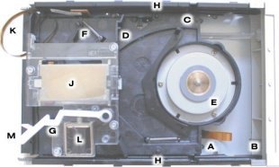
Рисунок 3 – Накопитель Zip в собранном виде
Общие сведения. Устройство в собранном виде, которое можно увидеть на рис.3, состоит из корпуса, поддона, направляющих и платы с электроникой, закрепленной на дне.
Поддон может двигаться, скользя вдоль направляющих боковых пластин с профильными вырезами. (Направляющие устройства расположены вдоль боковых стенок, примерно где стоит буква "H", на снимке почти не видны).
Направляющие позволяют поддону двигаться от передней части устройства к задней, причем сам поддон при этом поднимается или опускается. Пружина, установленная между точками "A" и "B" (их две, на обоих сторонах) подтягивает поддон к передней части устройства, тем самым стремясь вытолкнуть корпус диска из устройства. На рисунке 3 поддон показан в полностью "обратном" положении, как будто диск находится в устройстве. Но обычно, без диска в устройстве, поддон будет находиться в передней части (правая часть рис.3), насколько это позволяют направляющие.
Загрузка диска. Как только диск вставлен и еще не дошел до упора "D" поддона, собачка поворотного рычага "C" ловит край металлической заслонки корпуса диска и начинает двигать заслонку в полностью открытое положение. Натяжение пружины поворотного рычага также создает небольшую противостоящую силу, которая помогает пружине "A-B" выталкивать диск из устройства.
После того, как корпус диска достигает упора "D", начинается сдвигание самого поддона к задней части устройства. Канавки направляющих, в которых скользит поддон, направлены вверх так, чтобы, когда поддон затолкнут назад диском, сам поддон подымался до встречи с корпусом диска и шпиндель двигателя "E" сцеплялся с основанием диска. Серое магнитное кольцо вокруг сердцевины двигателя сильно сжимается при этом с сердцевиной диска.
Рычаг "F" уводит головки в зону хранения при критической ситуации. Он механически расцепляет и уводит головки устройства, если электропитание отсутствует и нет возможности сделать это с помощью электроники. Когда поддон закончил движение назад, одна из двух собачек внутри устройства блокирует расцепитель, разрешая движение головок. Тем временем, вторая собачка зацепляется за белый эксцентрик "G", отодвигая его от центра двигателя. Этим самым снимается механическая блокировка головок, предохраняющая головки от выхода без вставленного диска.
Как только поддон достигает предела движения назад, вторая собачка снижается до метки, показанной как раз выше метки "G", защелкивая поддон в задней части устройства. Кроме того, корпус диска захватывается в устройстве двумя штырьками "H", который входят в отверстия в основании корпуса диска. Это происходит, когда поддон поднялся по направляющей до встречи с корпусом диска. Когда вторая собачка подходит к метке у эксцентрика "G", маленький выключатель, установленный на схемной плате ниже поддона включается, сообщая электронике устройства, что корпус диска был успешно вставлен и захвачен. Звуковая катушка привода головок "J" получает питание через гибкий кабель "K" (который также несет сигналы чтения/записи головок), чтобы выдвинуть и загрузить головки на диск.
Извлечение диска. Когда устройство получает команду на выброс диска, головки сначала оттягиваются назад к месту посадки/хранения, затем шпиндель двигателя останавливается. После короткой паузы эжекторный соленоид "L" получает импульс, чтобы отвести эксцентрик "G" от второй собачки. Этим самым отпирается поддон, позволяя пружине "A-B" тянуть поддон вперед. Поддон следует по направляющим вперед-вниз, разъединяя шпиндель "E" с сердцевиной диска, затем отодвигается сам и расцепляет два штырька "H" от корпуса диска. Это позволяет поворотному рычагу "C", нагруженному пружиной, выдвинуть корпус диска из устройства, закрывая в процессе движения защитную заслонку диска. Обратите внимание также, что ручное выброс диска может быть произведен, если затолкнуть прямую булавку на тыльной стороне устройства в местоположении "M". Это также приведет к отводу эксцентрика "G" от второй собачки, выталкиванию таким образом поддона и выбросу корпуса диска.
Головки и механизм их загрузки. На рис.4 показано две головки "A" и "B" в расцепленном состоянии. Так их видно, если смотреть прямо со стороны вставки диска.
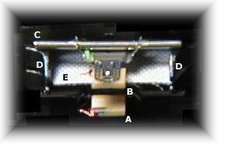
Рисунок 4 – Головки накопителя
Головки выходят из позиции посадки/хранения и перемещается к диску (вперед к нам). Серебристый брусок "C" расположен сверху поперек движения головок и идентичен такому же снизу. Вместе два бруска едут по сторонам (бортикам) "D", которые служат для "подъема и разделения" головкок, когда они входят в корпус диска. Войдя внутрь корпуса, головки сперва находятся выше поверхности вращающегося носителя. В процессе движения внутрь сторона (бортик) плавно сходит на нет, позволяя головкам зависнуть над быстро вращающимся (2.941 оборотов в минуту) диском. Вы можете также видеть белое "место посадки/хранения" "E", на которое головки возвращаются, когда они полностью разведены. Факт, что они трутся по этому материалу, немного двигаясь, наводит на мысль, что Iomega имеет в виду технологию "самоочистки".
Накопители Zip бывают двух видов; встраиваемые и внешние. Встраиваемый привод устанавливается в один из отсеков, предназначенных для дисковода. В комплект такого устройства входит адаптер SCSI.
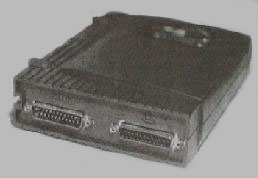
Рисунок 5 – Разьемы для подключения Zip-накопителя к PC и принтеру
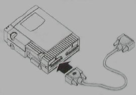
Рисунок 6 – Подключение Zip-накопителя
Порядок установки внешнего накопителя Zip следующий:
Пользователи, для которых любое новое устройство в конфигурации PC является источником конфликтов и проблем, будут озадачены: подключенный между компьютером и принтером привод Zip не вызывает конфликтов вообще. Более того, конфликтов не возникает даже при одновременной работе целой цепочки устройств: принтера, накопителя Zip и сканера, подключенных к единственному параллельному порту.
Поскольку внешний накопитель Zip является удобным устройством для переноса больших объемов информации с одного компьютера на другой, то для его подключения к другому PC предусмотрена специальная гостевая программа GUEST, которая находится на дискете, входящей в комплект поставки накопителя Zip.
В заключение несколько советов, касающихся ZIP в Windows:
Присутствие в названии слова «оптический» подчеркивает применение при изготовлении таких дисков сложной двойной технологии. Запись информации производится на ферромагнитный слой (как и на обычные гибкие диски) с помощью головок записи/чтения. Большая емкость флоптических дисков достигается за счет того, что количество дрожек увеличено до 755. При этом рабочее поле флоптического диска практически не увеличилось, но ширина дорожек значительно уменьшилась.
Здесь вступает в действие вторая часть технологии — оптический механизм позиционирования головок. Для точного позиционирования головок используется лазерный датчик.
На флоптический диск в процессе его производства наносится служебная информация — разметка дорожек записи, которая, по сути дела, формирует диск и остается неизменной на весь период его службы. В процессе записи/чтения механизм привода головок управляется сигналом с лазерного датчика, который определяет текущие координаты головок относительно разметки на диске. Это обеспечивает точное наведение на дорожку. Дорожки флоптического диска содержат по 27 секторов (27x512 байт). Скорость вращения флоптического диска 720 об/мин, а скорость обмена данными достигает 10 Мбайт/мин.
Несмотря на то, что данные устройства выпускаются уже длительное время, они не получили широкого распространения ввиду высокой стоимости накопителей.
Диски сверхвысокой плотности (Very High Density — VHD) внешне выглядят почти так же, как и 3,5" гибкие диски, но они позволяют хранить гораздо больше информации: на диск размером 3,5" можно записать до 21 Мбайт данных. Кроме того, в накопителях этого типа можно считывать и записывать информацию на дискеты емкостью 1,44 Мбайт и 720 Кбайт, т. е. их можно рассматривать как универсальные для гибких дисков разных типов.
В конце 1996 г. на рынке появились флоптические диски LS-120 емкостью 120 Мбайт, разработанные фирмами Compaq и ЗМ. В LS-120 используются стандартные технологии изготовления накопителей на магнитных дисках, однако они имеют специальные синхронизирующие дорожки, которые при изготовлении были записаны лазерным лучом на носитель. Накопители на гибких магнитных дисках LS-120 используют лазерный луч для считывания информации с синхронизирующей дорожки и позиционируют таким образом магнитную головку записи/чтения.
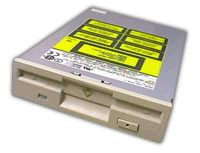
Рисунок 1. Внешний вид накопителя LS-120
Высокая точность позиционирования головки позволяет увеличить поперечную плотность записи. Для дискет LS-120 поперечная плотность записи равна 2490 дорожек/дюйм (для сравнения: у дискет 3,5" формата HD значение этого параметра может достигать 135 дорожек/дюйм). На рис.2 представлены дорожки на магнитных носителях для дискет 3,5" и LS-120 при увеличении в 192 раза.
Для производства магнитного носителя для дискет LS-120 используется технология двойного покрытия высокоплотным магнитным пигментом.
Технология LS-120 Laser Servo основана на уникальной комбинации оптической и магнитной технологии записи данных. На поверхности дискеты LS-120 нанесены высокоточные оптические дорожки, которые не несут никакой полезной информации, но используются лазерной следящей системой дисковода для высокоточного позиционирования магнитной головки на нужную дорожку. Оптические треки с высокой точностью наносятся на дискету на заводе и не могут быть случайно стерты или перезаписаны пользователем. Когда в привод вставлена дискета LS-120, то лазерная система слежения обнаруживает наличие оптических дорожек на поверхности диска и позиционирует головку дисковода на нужный трек. Такая технология позволила намного увеличить плотность дорожек на диске. На поверхности дискеты LS-120 умещается 2490 дорожек на дюйм, в то время как на обычной 1,44-мегабайтной HD-дискете — всего 135.
Треки с данными записываются обычным магнитным способом. В дисководе применена специальная двухзазорная магнитная головка, которая позволяет читать и писать как LS-120, так и самые обычные дискеты 1,44 Мбайт (High Density ) и 720 Кбайт (Double Density). Скорость вращения диска увеличена в несколько раз, что позволяет работать как с обычными, так и с дискетами LS-120 на большей скорости, чем в обычном дисководе. Для магнитной записи высокой плотности поверхность дискет LS-120 покрыта высококоэрцитивным металлическим составом по специальной двухслойной технологии. Магнитный слой наносится на тонкую (0,0025 дюйма) полиэтиленовую подложку.
Внешне дискеты LS-120 очень похожи на обычные и имеют окошко защиты от записи. В случае использования внутренних IDE-устройств LS-120 и поддержки их со стороны BIOS можно вообще отказаться от использования традиционного флоппи-дисковода.
Основные параметры флоптических дисков LS-120 и гибких магнитных дисков 3,5” HD представлены в таблице 1.
Таблица 1. Основные параметры флоптических дисков LS-120 и гибких магнитных дисков 3,5” HD
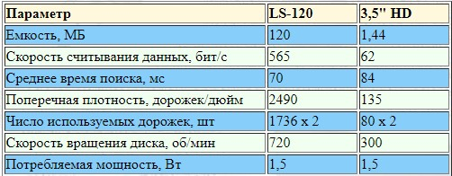
Накопители на сменных жестких дисках (remmovable hard disk drives) – это новый тип накопителей, появивишийся на отечественном рынке в 1996 - 1997гг. Они являются новым воплощением идеи сменного накопителя на жестких дисках и позволяют эффективно решать проблему неограниченного наращивания дискового пространства компьютера. Различные по исполнению (внешнему и внутреннему) и емкости, эти накопители имеют общие черты, хотя производятся несколькими компаниями, в том числе SyQuest, Iomega, D2, Nomai, Xyratex и др. Фирма SyQuest производит сменные жесткие диски с 1982г. и контролирует 80% мирового рынка этих устройств.
В отличие от гибких дисков, сменные жесткие диски имеют жесткую металлическую или стеклопластиковую основу и выполнены с использованием технологии, аналогичной технологии производства жестких дисков. Тем не менее, в них расстояние между магнитным диском и головкой больше, чем в классических накопителях на жестких дисках. Это, естественно, сказывается на плотности записи и общей емкости накопителя. Сам привод накопителя на сменных жестких дисках во многом идентичен приводу внешнего накопителя на 3,5” и 5,25” гибких дисках.
Сменный картридж состоит из жесткого магнитного диска (пластины), заключенного в прозрачный пластмассовый конверт. Фирма Iomega производит накопители на сменных жестких дисках емкостью 1 ГБайт типа Jaz. Такие устройства (рис.1) выпускаются как во внешнем, так и во встроенном исполнении. В обоих случаях для обмена данными используется интерфейс SCSI. Jaz спроектирован под тип платы SCSI-2 и поставляется с 50-штырьковыми разъемами (специальный переходник позволяет подключить устройство и к 25-штырьковому разъему платы SCSI более ранней версии).
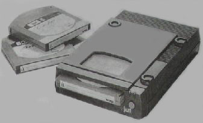
Рисунок 1. Накопитель типа Jaz
Программное обеспечение Jaz предусматривает присвоение буквенного символа сменному дисководу, причем программные инструменты устанавливают собственную пиктограмму (а не используют по умолчанию иконку накопителя на сменных дисках). Скорость обмена данными в Jaz-устройствах составляет до 12 МБайт/с., т.е. емкость дисков в 1 ГБайт заполняется за время около 5 мин. Такая скорость позволяет записывать полноэкранное видео в реальном масштабе времени. Параметры нового накопителя позволяют использовать Jaz-устройства для воспроизведения высококачественных аудио- и видеозаписей и могут составить серьезную конкуренцию как магнитооптическим накопителям, так и CD-ROM. Ведь один гигабайтный Jaz-картридж позволяет хранить и воспроизводить:
Среднее время поиска информации у накопителей Jaz составляет 12 мс, среднее время доступа – 17 мс (т.е. время задержки составляет 5 мс), частота вращения диска – 3000 об/мин.
На мировом рынке конкуренцию устройствам Jaz составляют накопители на сменных жестких дисках фирмы SyQuest типа SyJet емкостью 1,4 ГБайт. Обычно эти устройства адаптированы для подключения к SCSI-интерфейсу, однако могут использовать и ATA-интерфейс. Кроме того в ряде случаев связь осуществляется через стандартный параллельный порт, что весьма удобно. Частота вращения диска (помещенного в герметичный пластмассовый пакет) этих накопителей составляет около 3000 об/мин., а среднее время доступа составляет от 13,5 до 20 мс. Фирма SyQuest выпускает накопители на сменных жестких дисках трех форм-факторов (5,25”, 3,5”, 1,8”) различной емкости. В прцессе своей деятельности фирма провела многочисленные исследования, изготовила конструкции, часть которых, однако, не получила широкого распостранения.
Серьезную конкуренцию этим накопителям составляют накопители фирмы SyDOS (рис. 2), которая является дочерней фирмой SyQuest. Накопитель фирмы SyQuest представлен на рис. 3.
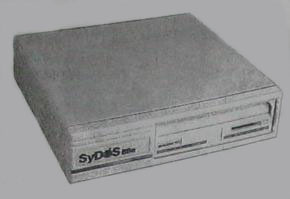
Рисунок 2. Внешний накопитель типа SyJet фирмы SyDOS
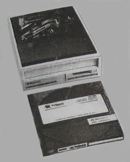
Рисунок 3. Накопитель типа SyJet фирмы SyQuest с картриджем
Фирма SyQuest изготавливает различные приводы и соответствующие им носители. Привод типа “Зубр” (Urtyp), обозначенный SQ555, был способен записывать и считывать 44 МБайт информации.
Впоследствии этот привод уже был способен обрабатывать удвоенный объем данных. Однако у него есть и существенный недостаток: приводы более ранних выпусков только считывают информацию с SyQuest-дисков емкостью 44 МБайт, но записывать на них не могут.
Проблема была решена с помощью привода SQ511x. Кроме того, у SQ511x есть еще одно преимущество: PC распознает наличие картриджа в приводе, то есть, когда в привод не установлен носитель информации, не производятся многочисленные запросы, как это происходит, когда Вы обращаетесь к FDD, не вставив в него дискету.
Описанные приводы SyQuest выпускаются во встроенном исполнени (иногда и во внешнем) размером 5,25”. Затем фирма изготовила еще две модели: SQ3105 размером 3,5” и емкостью 105 МБайт и SQ2542 размером 2,5” и емкостью 42 МБайт. Новые в то время модели были представлены в 1995 г., в них использовались сменные диски емкостью 270 МБайт.
По своему устройству и принципу действия накопители на сменных жестких дисках, конечно же, не могут состязаться в быстродействии и емкости с винчестерами. Однако для хранения и транспортировки данных больших объемов они являются лучшей альтернативой им. В таблице 1 приведены характеристики приводов SyQuest.
Таблица 1. Характеристики приводов SyQuest
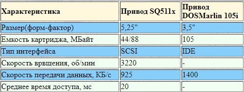
Носитель информации находится в герметично закрытом корпусе, который защищает его от частиц пыли и дыма (рис. 4), но поскольку полностью исключить загрязнение невозможно, то вэтих накопителях увеличивают расстояние между поверхностью диска и головкой чтения/записи (что уменьшает общую емкость).
Сам сменный диск (Removable Cartridge) имеет, как и другие носители, систему защиты от записи. Различие между носителями емкостью 44 и 88 МБайт можно определить по цвету устройства защиты от записи: у дисков SQ400 (44 МБайт) оно имеет красный цвет, а у дисков SQ800 – желтый.
По части удобства использования накопители типа SyJet несколько уступают накопителям типа Jaz.
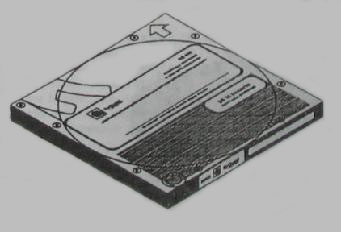
Рисунок 4 – Сменный диск типа SyJet
Например, подпружиненная крышка загрузочного отсека SyJet не так удобна при установке и смене картриджей, как закрытое шторкой отверстие дисковода Jaz, особенно если пытаться установить картридж одной рукой.
При покупке накопитель Jaz обойдется дешевле, чем SyJet, однако у последнего более высокая емкость дисков.
Кроме того, фирма Iomega поставляет на рынок накопители Jaz собственного производства, она продает лицензии на их изготовление другим фирмам, например, французской компании D2, специализирующейся на выпуске периферийных устройств со SCSI-интерфейсом.
Накопитель D2 Jaz (рис. 5) – это высококачественный внешний накопитель емкостью 1 ГБайт. Он имеет SCSI-интерфейс и встроенный в корпус блок питания.
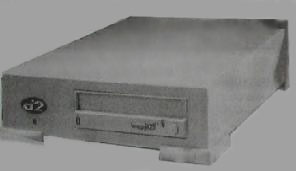
Рисунок 5 – Накопитель на сменных жестких дисках типа Jaz фирмы D2
Британская компания Xyratex (некогда подразделение фирмы IBM по производству жестких магнитных дисков) выпустила накопитель на сменных жестких дисках типа MaxT емкостью 540 МБайт (рис. 6)
Аналогичный накопитель выпускает фирма Nomai, однако эти устройства на отечественном рынке отсутсвуют.
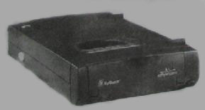
Рисунок 6 – Накопитель на сменных жестких дисках типа MaxT
{kind=link}
{kind=link}
{kind=link}
{kind=link}
{kind=link}
{kind=link}
{kind=link}
{kind=link}
{kind=link}
{kind=link}
{kind=link}
{kind=link}
{kind=link}
{kind=link}
{kind=link}
{kind=link}
{kind=link}
{kind=link}
{kind=link}